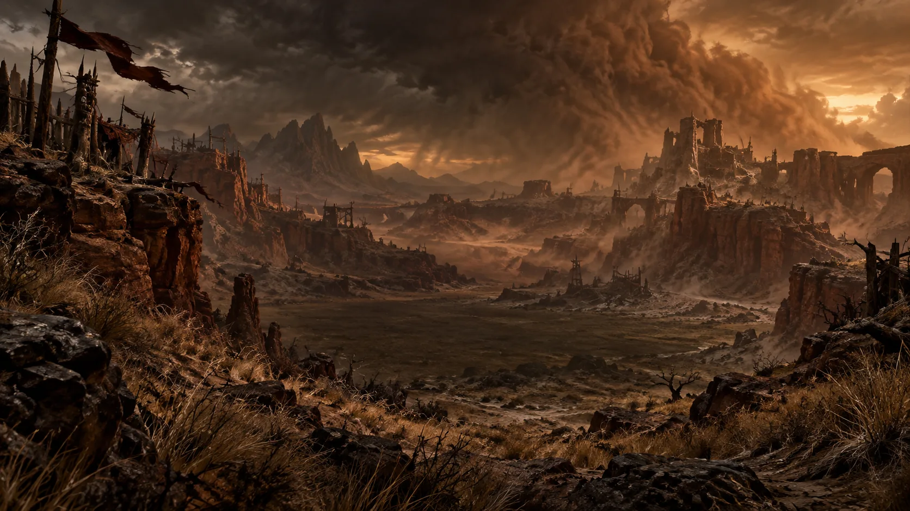

Ked Bardu
Eine befestigte Handels- und Karawanenstadt, in der Barbarenclans, Händler und Söldner ein zähes, pragmatisches Miteinander pflegen.
Staubige Ebenen und rote Schluchten formen ein Land, in dem Nomaden, Barbaren und Gesetzlose um jeden sicheren Weg kämpfen. Die offenen Weiten täuschen: Kannibalen, Plünderer und Dämonenkulte beherrschen viele der alten Wege zwischen den verstreuten Siedlungen.
Die Trockensteppe ist kein Land, das Menschen willkommen heißt. Grasland, ausgetrocknete Salzebenen und gewaltige Schluchten wechseln sich mit heißen Quellen und kaum fruchtbarem Boden ab. Wer hier lebt, tut es entweder aus Notwendigkeit – oder weil er an Orten überleben kann, die andere längst verlassen hätten.
Über Generationen haben sich deshalb sehr unterschiedliche Kulturen und Glaubensvorstellungen entwickelt. Ahnenverehrung und Naturglaube stehen neben lokalen Traditionen, während Nomaden, Händler, Söldner und Räuber um dieselben knappen Ressourcen konkurrieren. Wo in anderen Teilen Sanktuarios große Institutionen Macht ausüben, herrscht hier oft nur das Gesetz dessen, der stark genug ist, es durchzusetzen.
Die Landschaft selbst trägt außerdem die Spuren uralter Konflikte. Tempel, verlassene Siedlungen und Gräber erinnern daran, dass die Steppe keineswegs immer leer gewesen ist.

Eine befestigte Handels- und Karawanenstadt, in der Barbarenclans, Händler und Söldner ein zähes, pragmatisches Miteinander pflegen.
Von Wind und Zeit zerfurchte Canyons, die Karawanenwege abkürzen – und Hinterhalten guten Schutz bieten.
Bewegliche Siedlungen aus Zelten und Totemmasten, die mit den wenigen Wasserstellen der Steppe wandern.
Barbarenclans und Nomadenstämme teilen sich die Steppe in einem Geflecht aus Bündnissen und alten Fehden. Wer hier überlebt, kennt jede Wasserstelle und jeden Zufluchtsort – Fremde haben es entsprechend schwer.
In den entlegeneren Schluchten haben sich Kannibalenkulte und Plündererbanden eingenistet, die Karawanen aus dem Hinterhalt überfallen. Gerüchte über dämonische Rituale tief in den Ödländern häufen sich seit Liliths Rückkehr.
Notiz von Archivar Valen · unbestätigtDie Berichte ähneln sich, doch keiner nennt denselben Ort. Vielleicht wechseln die Kulte ihre Lager — vielleicht folgt ihnen etwas anderes durch die Ödländer.
Die Trockensteppe gilt vielen als Wiege der Barbarenkultur Sanktuarios – ein hartes Land, das seine Bewohner zu ebenso harten Kämpfern macht.
Fernab zentraler Autorität regeln hier Clanrecht und persönliche Stärke, was anderswo Gesetze und Institutionen übernehmen.
Ohne zentrale Ordnung nutzen Plünderer und Kulte die Weite der Steppe – ein Zustand, der sich mit jeder neuen Unruhe im Land verschärft.